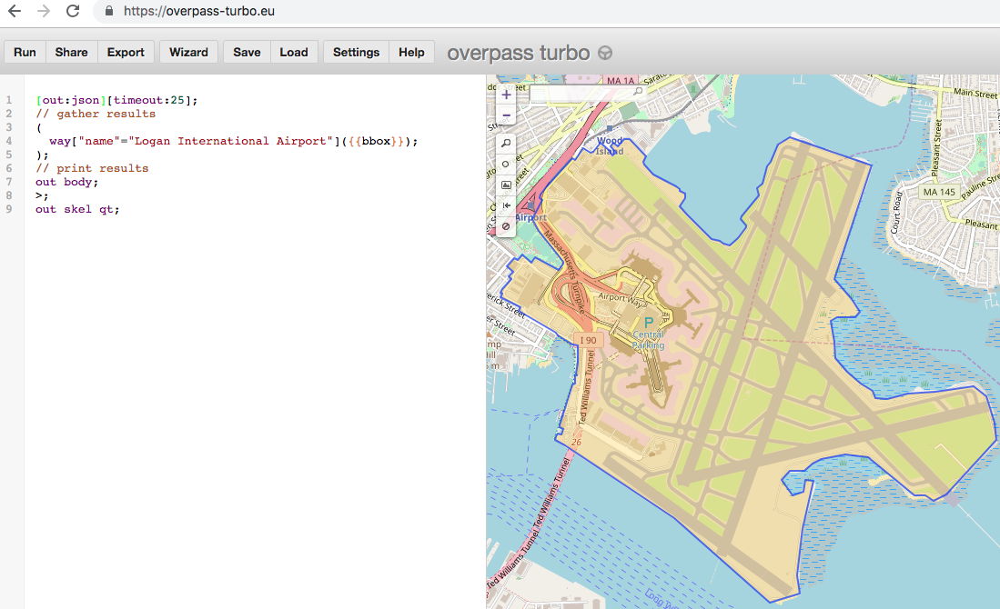
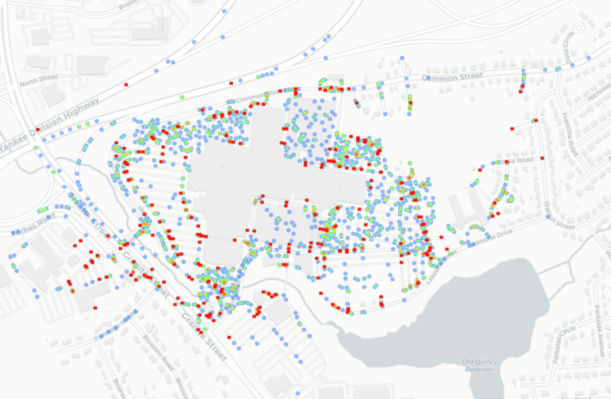

Wikipedia of the world, but for maps!
Can we find users parked at the mall?

import geopandas as gpd, pandas as pd, dask.dataframe as dd
points = pd.DataFrame(....)
parking_lot_structures = gpd.GeoDataFrame()
gpd.sjoin(points, parking_lot_structures)
# vs
points = dd.DataFrame(...)
points.loc[geohashsed_parking_lot_covering]
gpd.sjoin(points, parking_lot_structures)
Speed up ~ 15% in test dataset
Can we figure out where someone lives from where they have been?
Sounds like a job for some unsupervised learning!
DBSCAN(eps="distance metric in rads", min_samples=10,
algorithm='ball_tree', metric='haversine').fit(
np.radians(random_points_list)))
* Image comes from Thasos Group
Compared revenue vs car traffic at places like Six Flags
Challenge from before: Customers are within the program for 90 days
Great discussion from Thasos's John Collins
Hypothesis: Vehicle traffic, measured via telematics, can provide an early indicator for quarterly revenue
Results are good.... kind of
Hold off and wait for more data, and ask to record > 90 days